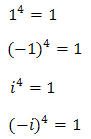
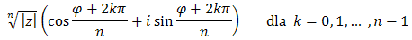

Gdy pierwiastkujemy liczby zespolone, to możemy
otrzymać kilka różnych wyników.
Na przykład pierwiastkiem 4 stopnia z liczby 1 są liczby: 1, -1,
i oraz -
i, ponieważ:

Zatem wyciągając pierwiastek 4 stopnia z liczby rzeczywistej 1, mamy w liczbach
zespolonych aż 4 rozwiązania!
Generalnie gdy wyciągamy pierwiastek
n-tego stopnia z liczby zespolonej, to zawsze otrzymujemy
n rozwiązań. O tym jak obliczyć
te rozwiązania mówi następujące twierdzenie:
Twierdzenie
Niech z = |z|(cosφ + i sinφ) będzie liczbą
zespoloną różną od zera.
Wówczas pierwiastkami stopnia n z liczby
z są liczby: 